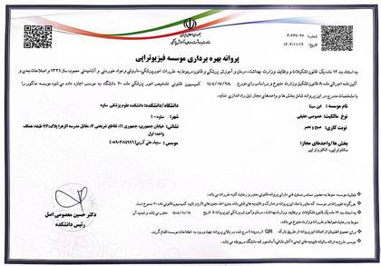
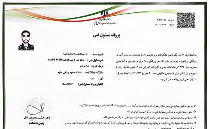
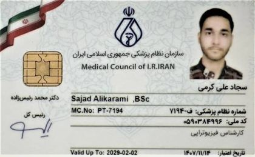

درباره کلینیک فیزیوتراپی ابنسینا ساوه
کلینیک ابنسینا در ساوه با تمرکز بر ارزیابی حرکتی و برنامه متناسب با هر بیمار کار میکند. هدف، کاهش درد و برگشت به فعالیت روزمره است.
سجاد علیکرمی
فیزیوتراپیست — کلینیک فیزیوتراپی ابنسینا ساوه
شماره نظام پزشکی: ف-۷۱۹۴
رویکرد درمان
درمان از ارزیابی حرکتی شروع میشود. علت درد و محدودیت را پیدا میکنیم و برنامه را بر اساس وضعیت شما مینویسیم.
ترکیب کار: دستورزی، تمرین هدفمند و در صورت نیاز درای نیدلینگ. هر جلسه با پاسخ بدن شما تنظیم میشود.
حوزههای تمرکز
کمردرد، دیسک، سیاتیک و درد گردن؛ زانو، شانه، آسیب ورزشی و بازتوانی پس از جراحی.
برای بیماران سکته و سالمندان برنامه جدا نوشته میشود.
مدارک و مجوزها
پروانه بهرهبرداری موسسه، پروانه مسئول فنی و کارت نظام پزشکی فیزیوتراپی.


